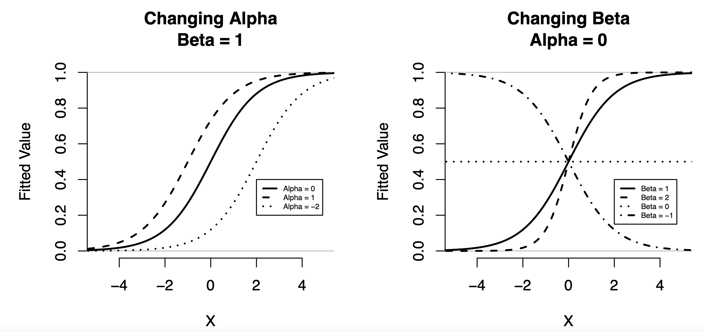

Up to this point, we have focused on the linear regression model. However, in the case of binary outcome variables, the linear regression model may not be appropriate. In this lesson, we introduce the logistic regression model as a way to model binary outcome variables.
This lesson covers the following topics:
- The limitations of the linear probability model
- The logistic regression model, and how to interpret the coefficients of the model (including with odds ratios).
- How we can conduct statistical inference with logistic regression, including likelihood ratio tests.
- How logistic regression can be used for prediction and classification.
1.8.1: Motivation - Limitations of the Linear Probability Model
In 1.9.6, we introduced the linear probability model - a way to adapt the linear regression model to deal with binary outcome variables.
- Remember, binary outcome variables are y variables that have two categories: y=0 and y=1.
The linear probability model, instead of having the outcome of y_i, instead has the outcome of \pi_i: the probability of an observation i being in category y = 1:
\pi_i = \beta_0 + \beta_1x_i + \dots + \beta_kx_{ki} + u_i
The outcome \pi_i of the linear probability model is the probability of an observation i being in category y = 1:
\pi_i = Pr(y_i = 1)
This also implies that the probability of an observation i being in category y=1 is 1-\pi_i, due to the rules of probability:
1 - \pi_i = Pr(y_i = 0)
However, as we briefly discussed in 1.9.7, there are a few major weaknesses of the linear probability model.
First of all, the linear probability model is, of course, linear. A linear function f(x)=mx+b has a range of (-∞, ∞). That means the linear probability model’s potential \pi_i values are \pi_i \in (-∞, ∞).
However, we know by the axioms of probability, that a probability must be between 0 and 1: \pi \in [0, 1]. A probability of 0 means an event never occurs, and a probability of 1 means an event always occurs.
This means that if we use the linear probability model, we will often get nonsensical predictions of \pi_i outside of the range between 0 and 1. This is a pretty big concern if our goal is to make accurate predictions.
Another limitation of the linear probability model is that the assumption of homoscedasticity is not met in binary outcome variables. We have not yet discussed homoscedasticity (discussed in 2.4.1), and we will not be too concerned about this for now. Just know that using the linear probability model will result in larger standard errors, making it harder to reject our null hypothesis during statistical inference.
Finally, the assumption of normality (of the error term u) in the linear probability model is not met. This is not a huge issue, since as we covered in 1.2.4, the central limit theorem ensures normality of our sampling distributions without the underlying distributions being normal. However, it can be a limitation if our sample sizes are very small.
So, how do we address these issues? The most common answer is with a link function. A link function takes our linear probability model outcome \pi_i as an input, and transforms it to meet the requirements of our data.
- For example, with binary outcome variables, a link function can input \pi_i, and output a value that is always between 0 and 1.
The logistic regression is an extension of the linear regression, which applies a link function to ensure probabilities \pi_i are always between 0 and 1.
1.8.2: Logistic Regression Model
The logistic regression model transforms the linear probability model, such that the probability \pi_i is always between 0 and 1, thus meeting the rules of probability, and solving the issues with the linear probability model.
The logistic regression takes the following form:
\log\left( \frac{\pi_i}{1 - \pi_i} \right) = \beta_0 + \beta_1 x_{1i} + \dots + \beta_kx_{ki}
- Where \beta_0 (intercept) and coefficients \beta_1, \dots, \beta_k need to be estimated.
As we can see, the logistic regression is a model of \pi_i through a link function: \log[\pi_i / (1- \pi_i)] (this is also called the log-odds). However, this obviously is not too useful for us - we want to know \pi_i, not \log[\pi_i / (1- \pi_i)].
Luckily, through rules of logarithms, we can isolate \pi_i to also get logistic regression as a model for probabilities.
A useful property of logarithms is:
e^{\log a} = a
Using this property, we can isolate \pi_i to get the logistic regression as a model for probabilities \pi_i:
\begin{split} \log\left( \frac{\pi_i}{1 - \pi_i} \right) & = \beta_0 + \beta_1 x_{1i} + \dots + \beta_kx_{ki} \\ e^{\log\left( \frac{\pi_i}{1 - \pi_i} \right)} & = e^{\beta_0 + \beta_1 x_{1i} + \dots + \beta_kx_{ki} } \\ \frac{\pi_i}{1 - \pi_i} & = e^{\beta_0 + \beta_1 x_{1i} + \dots + \beta_kx_{ki} } \\ \pi_i & = (1- \pi_i) e^{\beta_0 + \beta_1 x_{1i} + \dots + \beta_kx_{ki} } \\ \pi_i & = e^{\beta_0 + \beta_1 x_{1i} + \dots + \beta_kx_{ki} } - \pi_i e^{\beta_0 + \beta_1 x_{1i} + \dots + \beta_kx_{ki} } \\ \pi_i + \pi_i e^{\beta_0 + \beta_1 x_{1i} + \dots + \beta_kx_{ki} } & = e^{\beta_0 + \beta_1 x_{1i} + \dots + \beta_kx_{ki} } \\ \pi_i(1 + e^{\beta_0 + \beta_1 x_{1i} + \dots + \beta_kx_{ki} }) & = e^{\beta_0 + \beta_1 x_{1i} + \dots + \beta_kx_{ki} } \\ \pi_i & = \frac{e^{\beta_0 + \beta_1 x_{1i} + \dots + \beta_kx_{ki} }}{1+ e^{\beta_0 + \beta_1 x_{1i} + \dots + \beta_kx_{ki} }} \end{split}
The logistic regression can be rewritten as follows in terms of probabilities \pi_i:
\pi_i = \frac{e^{\beta_0 + \beta_1 x_{1i} + \dots + \beta_kx_{ki} }}{1+ e^{\beta_0 + \beta_1 x_{1i} + \dots + \beta_kx_{ki} }}
How do we estimate the parameters \beta_0, \dots, \beta_k? We use a procedure called Maximum Likelihood Estimation. This is quite complex, and we will not delve into the estimation process in this lesson (however, it is covered in lesson 2.6).
Naturally, our fitted probabilities \hat\pi_i (fitted values for probabilities) will be the same regression, but with our estimated parameters \hat\beta_0, \dots, \hat\beta_k:
\hat\pi_i = \frac{e^{\hat\beta_0 + \hat\beta_1 x_{1i} + \dots + \hat\beta_kx_{ki} }}{1+ e^{\hat\beta_0 + \hat\beta_1 x_{1i} + \dots + \hat\beta_kx_{ki} }}
Now that we know the function for our fitted probabilities \hat\pi_i, what do these functions actually look like graphically? In the figure below are different logistic regression fitted probabilities graphed, while altering the parameters.
- Note: In the figure below, alpha \alpha means intercept \beta_0. This is a common alternative notation.

We can see through these graphs, that the fitted probabilities of \hat\pi_i never exceed 1, or go below 0. Thus, the logistic regression solves this issue of the linear probability model.
1.8.3: Interpretation of Coefficients and Limitations
Once we have estimated our parameters \beta_0, \dots, \beta_k, how do we actually interpret these in our fitted probabilities equation?
- First, let us focus on the qualitative/intuitive interpretations.
- Then, we will talk about the numerical interpretations, and the difficulties with those.
Qualitative/Intuitive Interpretations
The intercept \hat\beta_0 “shifts” the probabilities up and down. Thus, a higher \hat\beta_0 value means a higher probability \pi_i for all values of x, and a lower \hat\beta_0 value means a lower probability \pi_i for all values.
For example the figure below (the left side) shows how the probabilities shift upwards and downwards when we changer \beta_0 (labelled alpha in the graph).
The coefficient \hat\beta_j (any \hat\beta_1, \dots, \hat\beta_k) describes the association between x and the probability of being in category y=1.
- When \hat\beta_j is positive, higher values of x increases the chances of an observation being in cateogry y=1.
- When \hat\beta_j is negative, higher values of x reduces the chances of an observation being in category y=1.
- When \hat\beta_j = 0, increasing/reducing x has no relationship with the chances of an observation being in category y=1.
The figure above shows this in graphical form (on the right side).
Numerical Interpretations
We have discussed how the relationship between x and y given when \hat\beta_j is positive or negative. However, what about the magnitude of the relationships? What do the actual values of \hat\beta_j tell us.
Unfortunately, these are less self explanatory that the linear regression coefficients.
One way we could interpret the values is with the log-odds version of the logistic regression:
\log\left( \frac{\pi_i}{1 - \pi_i} \right) = \beta_0 + \beta_1 x_{1i} + \dots + \beta_kx_{ki}
- Where \log[\pi_i / (1- \pi_i)] is called the log-odds.
Here, we can use a linear regression interpretation of \hat\beta_j: As x increases by one unit, the expected value of the log-odds \log[\pi_i / (1- \pi_i)] changes by \hat\beta_j.
The issue with this interpretation is that the log-odds is very unintuitive - what even is a log-odd? \log[\pi_i / (1- \pi_i)] is not a very understandable metric in terms of interpretation.
We want to interpret in terms of probabilities or odds. However, recall the logistic regression for probabilities:
\hat\pi_i = \frac{e^{\hat\beta_0 + \hat\beta_1 x_{1i} + \dots + \hat\beta_kx_{ki} }}{1+ e^{\hat\beta_0 + \hat\beta_1 x_{1i} + \dots + \hat\beta_kx_{ki} }}
It is really not easy to interpret how changing x by one unit will affect \hat\pi_i.
- We can generally say that larger values of \hat\beta_j mean a stronger positive relationship, and more negative values of \hat\beta_j mean a stronger negative relationship.
- However, we cannot express the actual magnitude/value of change when increasing x by one unit.
Luckily for us, there is a way to somewhat interpret logistic regression coefficients and their magnitudes: the odds ratios. We will cover this in the next section.
1.8.4: Odds Ratios and Interpretation
Odds ratios are a way to interpret the magnitude of our coefficients \hat\beta_j. But to interpret odds ratios, we must first understand what odds are.
The Odds of an Event
The odds of an event, is the probability of that event, divided by the probability of that event not happening.
For example, assume we have some event A. The offs of event A occuring are:
\text{odds}_A = \frac{Pr(A)}{1 - Pr(A)}
In terms of logistic regression, the event we are interested in is an observation being in category y=1. The probability of that event occurring, as we have explained before, is \pi_i. Thus, the odds of \pi_i are as follows:
\text{odds} = \frac{\pi_i}{1- \pi_i}
You might note that the logistic regression’s link function looks very similar to this:
\log\left( \frac{\pi_i}{1 - \pi_i} \right) = \beta_0 + \beta_1 x_{1i} + \dots + \beta_kx_{ki}
This is because the logistic regression is model of the log-odds of the event of an observation being in category y=1.
- They are the “log”-odds because the logistic regression takes the log of the odds.
We can solve for the odds of an observation in category y=1, which is \pi_i/(1 - \pi_i):
\text{odds} = \frac{\pi_i}{1 - \pi_i} = e^{\beta_0 + \beta_1 x_{1i} + \dots + \beta_kx_{ki} } \\
Odds Ratios
Odds ratios, as the name suggests, are the ratio of two odds.
The odds ratio is the ratio of two odds. Let us say we have two odds: \text{odds}_0 and \text{odds}_1. The odds ratio takes the form:
OR = \frac{\text{odds}_1}{\text{odds}_0} = \frac{\pi_1 / (1- \pi_1)}{\pi_0 /(1-\pi_0)}
The odds ratio allows us to compare two different odds of \pi_i. Why is this useful?
- We could calculate the odds of \pi_i given x_i = x (any value of x).
- Then, we could calculate the odds of \pi_i given x_i = x + 1 (an increase of one unit compared to the previous value of x).
- Then, by comparing the odds ratio, we can compare the multiplicative change between x and x+1, which allows us to understand how increasing x by one unit affect the outcome.
How do we calculate the odds ratio between the odds of \pi_i when x_i = x and x_i = x+1?
First, let us find the odds of each individual scenario: The odds of x_i = x are (using the formula for odds introduced above). Let us assume that we only have one explanatory variable for simplicity.
\begin{split} \text{odds}_{x_i = x} = \frac{\pi_i}{1 - \pi_i} & = e^{\beta_0 + \beta_1 x_i} \\ & = e^{\beta_0 + \beta_1 x} \\ & =e^{\beta_0}e^{\beta_1 x} \end{split}
Now the odds of x_i = x+1 are as follows:
\begin{split} \text{odds}_{x_i = x+1} = \frac{\pi_i}{1 - \pi_i} & = e^{\beta_0 + \beta_1 x_i} \\ & = e^{\beta_0 + \beta_1 (x+1)} \\ & = e^{\beta_0 + \beta_1x + \beta_1} \\ & = e^{\beta_0}e^{\beta_1x}e^{\beta_1} \end{split}
Now, let us find the odds ratio of these two odds:
\begin{split} OR & = \frac{\text{odds}_{x_i = x+1}}{\text{odds}_{x_i = x}} \\ &= \frac{e^{\beta_0}e^{\beta_1x}e^{\beta_1}}{e^{\beta_0}e^{\beta_1x}} \\ & = e^{\beta_1} \end{split}
Thus, our odds ratio when increasing x by one unit is e^{\beta_1}.
Interpreting Odds Ratios
We know that an odds ratio when increasing x by one in a logistic regression is e^{\beta_1}. But what does this mean?
What is a ratio? It is the multiplicative change to go from one value to another. This is a little complex to understand, so think about it this way: When you take the odds for x_i = x, and multiply by the odds ratio, you get the odds for x_i = x+1:
\text{odds}_{x_i = x} \times \frac{\text{odds}_{x_i = x+1}}{\text{odds}_{x_i = x}} = \text{odds}_{x_i = x+1}
So essentially, when we increase x by one, the odds of an observation being in category y=1 is multiplied by the odds ratio.
This intuition of multiplicative change allows us to interpret odds ratios.
When x increases by one unit, there is an associated e^{\beta_1} (odds ratio) multiplicative change in the odds of an observation being in category y=1.
So, if e^{\beta_1}>1, then a one unit increase in x is associated with an increase in the odds of a unit being in category y=1 (since multiplying by anything greater than 1 increases the original value).
- More specifically, when e^{\beta_1} > 1, a one unit increase in x is associated with a (e^{\beta_1} > 1 - 1) \times 100 percent increase in the odds of a unit being in category y=1.
- For example, if the odds ratio e^{\beta_1} = 1.28, a one unit increase in x is associated with a 28% increase in the odds of a unit being in category y=1.
If e^{\beta_1} < 1, then a one unit increase in x is associated with a decrease in the odds of a unit being in category y=1 (since multiplying by anything less than 1 decreases the original value).
- More specifically, when e^{\beta_1}< 1, a one unit increase in x is associated with a (1 - e^{\beta_1}) \times 100 percent decrease in the odds of a unit being in category y=1.
- For example, if odds ratio e^{\beta_1} = 0.7, a one unit increase in x is associated with a 30% decrease in the odds of a unit being in category y=1.
If e^{\beta_1} = 1, a one unit increase in x is associated with no change in the odds of a unit being in category y=1 (because multiplying by 1 gets you the same result).
A key warning when interpreting odds ratios is that odds are not probabilities - consult the definition of odds above.
- For example, a doubling of the odds is not equal to a doubling of the probability of an event.
1.8.5: Inference and Hypothesis Testing
Just like with linear regression, we can conduct hypothesis tests on our coefficients (and odds ratios).
Just as with linear regression, we will have sampling variation in our estimates of our coefficients \hat\beta_j. We can quantify this variation/uncertainty with the standard error \widehat{se}(\hat\beta_j).
- Note, every explanatory variable coefficient \hat\beta_1, \dots, \hat\beta_k will have its own standard error and sampling distribution.
With the standard error, we can run confidence intervals and hypothesis testing.
Confidence Intervals
Just like previously discussed for linear regression in 1.4.4, the 95% confidence intervals of our estimate \hat\beta_j has the bounds:
\hat\beta_j - 1.96 \widehat{se}(\hat\beta_j), \ \hat\beta_j + 1.96 \widehat{se}(\hat\beta_j)
We can also calculate confidence intervals of the odds ratios. This is done by first calculating the interval for \hat\beta_j first (as shown above), then taking the exponentials of the end points. Thus, the 95% confidence interval for the odds ratios has the bounds:
e^{\hat\beta_j - 1.96 \widehat{se}(\hat\beta_j)}, \ e^{\hat\beta_j + 1.96 \widehat{se}(\hat\beta_j)}
The confidence interval means that under repeated sampling and estimating \hat\beta_j (or the odds ratios), 95% of the confidence intervals we construct will include the true \hat\beta_j (or odds ratio) value in the population.
It is very important to note that confidence intervals do not mean a 95% probability that the true \hat\beta_j (or odds ratio) is within any specific confidence interval we calculated.
We cannot know based on one confidence interval, whether it covers or does not cover the true \hat\beta_j (or odds ratio).
The correct interpretation is that over many samples from the same population, we would expect 95% of our confidence intervals to contain the true \hat\beta_j (or odds ratio) value.
Hypothesis Testing
Hypothesis testing follows the same procedure as simple linear regression in 1.4.5 (also see 1.2.5, 1.2.6, and 1.5.5 on more for hypothesis testing). This allows us to test if there is a statistically significant relationship between x_j and y.
In regression our typical null hypotheses is that there is no relationship between x_j and y, and our alternate hypothesis is that there is a relationship between x_j and y. Thus, our hypotheses are:
\begin{split} H_0 & : \beta_j = 0 \\ H_1 & : \beta_j ≠ 0 \end{split}
Now we calculate a test statistic. However, instead of the t-test statistic (as we used in linear regression), we will use a z-test statistic. The mathematics is the same, we just use a different distribution.
z = \frac{\hat\beta_j - 0}{\widehat{se}(\hat\beta_j)}
- Where the 0 represents the null hypothesis value. If you have any other null hypothesis value, change the 0 to your hypothesis value.
Now, we will consult a standard normal distribution (see 1.1.7) to calculate the p-values.
- Note that we are using a standard normal distribution, not a t-distribution like in regressions.
- The reason for this is because of the central limit theorem (see 1.2.4). The linear regression is actually an outlier - there is a technical reason for why we use the t-distribution and not the normal for linear regression, explained in lesson 2.4.
Once we have obtained our p-values from the t-distribution, we can interpret the p-values as follows:
The p-value is the probability of getting a test statistic equally or more extreme than the one we got with our sample estimate \hat\beta_j, given the null hypothesis is true.
If p<0.05, we believe the probability of the null hypothesis is low enough, such that we reject the null hypothesis (that there is no relationship between x_j and y), and conclude our alternate hypothesis (that there is a relationship between x_j and y).
If p>0.05, we cannot reject the null hypothesis, and cannot reject that there is no relationship between x_j and y.
Note how I have been using the word relationship, not causal effect.
Causality is not established through estimators, it is established through a strong experimental design (which we will cover in part II of the course).
Extension: Wald Test
In the above hypothesis test, we used the z-test statistic to conduct our hypothesis test. We can use another test statistic, the wald test statistic:
W = \left( \frac{\hat\beta_j -0 }{\widehat{se}(\hat\beta_j)} \right)^2
- The wald test statistic is also just the z-test statistic squared.
The wald test statistic is then compared to a \chi^2 distribution with 1 degree of freedom, to obtain the p-value.
The wald test produces the exact same p-value as the z-test, so there is no real reason to use one or the other. The reason I am mentioning this is because some statistical software and papers will use the wald test, so it is useful to know what is going on.
1.8.6: Likelihood Ratio Tests
Just like in linear regression, sometimes we will want to test more than one coefficient at a time in a hypothesis test. This is especially the case when we have categorical variables or polynomial transformations.
In linear regression, we talked about how we could use the F-test to run tests on multiple coefficients.
However, F-tests no longer work in the case of logistic regression. This is because the F-tests compare the R^2 metric between two models, where R^2 measures the percent of variation of the outcome variable that the explanatory variables explain. However, in logistic regression with a binary y outcome, there isn’t really such thing as the “variation” of the outcome - it is always y=0 or y=1.
Thus, we need some alternative test to use on logistic regression for testing multiple coefficients.
The likelihood ratio test is the test we use to test multiple coefficients in logistic regression.
The likelihood ratio test allows us to test multiple coefficients at once. Just like the F-test for linear regression, the likelihood ratio test compares two models: our null model M_0, and our alternate model M_a:
\begin{split} & M_0 : \log \left( \frac{\pi_i}{1-\pi_i} \right) = \beta_0 + \beta_1 x_1 + \dots + \beta_g x_g \\ & M_a : \log \left( \frac{\pi_i}{1-\pi_i} \right) = \beta_0 + \beta_1 x_1 + \dots + \beta_g x_g + \beta_{g+1} x_{g+1} + \dots + \beta_k x_k \\ \end{split}
The model M_a contains all of the explanatory variables, including the ones we want to test.
The model M_0 contains the other explanatory variables that are not a part of our test. Model M_0 must be “nested” in model M_a: i.e. all explanatory variables present in M_0 must also be in M_a.
The model tests if M_a is significant better than M_0. If this is the case, the extra coefficients in M_a that we are testing are statistically significant.
However, we just said we cannot use R^2 for logistic regression. Then what does the likelihood ratio test use?
The answer is the likelihood function.
- The likelihood function determines how “likely” we are to observe the data we actually observe, given our estimated coefficients \hat\beta_0, \dots \hat\beta_k and our model’s explanatory variables.
- A higher likelihood function means it is more likely our estimated coefficients are the true values in the population, since those true values in the population “produced” the data we have.
- If one model’s estimated coefficients is more likely to produce the data we actually observe, it is considered more likely, and is considered the better model.
We will discuss the intricacies of likelihood functions in lesson 2.6, as they can be very complex and hard to understand. For now, just know that the higher likelihood our model is, the better it is considered to be.
Consider two models. Our null hypothesis model M_0 has some likelihood, that we will label L_0. The alternate hypothesis model M_a also has some likelihood, that we will label L_a.
If L_a is statistically significantly larger than L_0, then we will consider M_a to be the statistically significantly better model.
Our test statistic for the test will be the Likelihood Ratio Test Statistic, labelled L^2.
L^2 = -2 \log\left( \frac{L_0}{L_1} \right) = 2 \log (L_1) - 2 \log (L_0)
- Essentially, this is the difference between log likelihoods. The reason for the log-likelihoods, and not just likelihoods, will be explained in lesson 2.6 where we cover the statistical theory behind this test.
Once we get our test statistic, we will consult a \chi^2 distribution with degrees of freedom equal to the number of extra coefficients in the larger model M_a. The p-value will be obtained from this distribution.
The p-value is the probability of getting a test statistic equally or more extreme than the one we got with our alternate model M_a, given the null hypothesis is true.
- If p < 0.05, we believe the probability of the null hypothesis is low enough, such that we reject the null hypothesis (that M_0 is a better model), and conclude that our alternate hypothesis (that M_a is a better model). This also means that the extra coefficients in M_a are jointly statistically significant.
- If p> 0.05, we cannot reject the null hypothesis, and cannot reject that M_0 is the better model. Thus, the extra coefficients in M_a are jointly not statistically significant.
1.8.7: Prediction and Classification with Logistic Regression
Just like with linear regression, the logistic regression can be used for more than just interpreting the relationship between variables. The logistic model can also be used for prediction.
We can do two types of prediction with logistic regression:
- We can predict the probabilities of an unobserved observation being in category y=1.
- We can classify unobserved observations into either category y=1 or category y=0.
Let us explore both of these prediction methods.
Predicting Probabilities
We can predict the probability of an unobserved observation being in category y=1 (or category y=0 with some quick mathematics). To do this, we simply use the fitted probabilities:
\hat\pi_i = \frac{e^{\hat\beta_0 + \hat\beta_1 x_{1i} + \dots + \hat\beta_kx_{ki} }}{1+ e^{\hat\beta_0 + \hat\beta_1 x_{1i} + \dots + \hat\beta_kx_{ki} }}
We simply plug in our unobserved observations x_1, \dots, x_k values, and the fitted probabilities will spit out a probability of that observation being in category y=1.
If we are interested in finding the probability of an observation being in category y=0, we can simply first find the probability \pi_i of an observation being in category y=1, then doing 1 - \pi_i to get the probability of an observation being in category y=1.
For example, let us consider a very simple model with one explanatory variable
- Our outcome variable y will be which party an individual voted for, with y=0 being the Democrats, and y=1 being the republicans.
- Our explanatory variable x will be the age of the individual.
Our fitted probabilities will take the form:
\hat\pi_i = \frac{e^{\hat\beta_0 + \hat\beta_1\text{age}_i}}{1 + e^{\hat\beta_0 + \hat\beta_1\text{age}_i}}
- Where \pi_i is the probability that the observation i voted republican.
Let us pretend that we estimated the model to get \hat\beta_0 = -3 and \hat\beta_1 = 0.1. Thus, our fitted probabilities will be:
\hat\pi_i = \frac{e^{-3 + 0.1\text{age}_i}}{1 + e^{-3 + 0.1\text{age}_i}}
With this fitted model, we can predict the probability of any observation i voted for republicans, given their age. For example, what is the probability a 20 year old voted republican?
\hat\pi_i = \frac{e^{-3 + 0.1(20)}}{1 + e^{-3 + 0.1(20)}} = 0.2689
- Thus, a 20 year old has a 26.89 percent chance of voting republican.
What about the probability of a 60 year old voting republican?
\hat\pi_i = \frac{e^{-3 + 0.1(60)}}{1 + e^{-3 + 0.1(60)}} = 0.9525
- Thus, a 60 year old has a 95.25 percent chance of voting republican
Classification
What if we do not care about the probabilities of an observation being in category y=1? Instead, we care about what category an observation would be in?
For example, let us say google wants to create an email spam filter. Google does not necessarily care about the exact probability of an email being spam or not. What google cares about is if it should classify that email as spam or not.
Classification is about assigning categories to observations, not about predicting the probabilities.
So in other words, instead of predicting probability \hat\pi_i, we want to find the actual value of \hat y_i - is it category y=0 or y=1.
How do we do classification?
- First, we want to calculate predicted probabilities \hat\pi_i, like we did above.
- Then, given the probability of an observation, we either assign that observation to \hat y_i = 0 or \hat y = 1 based on some threshold.
For example, Google would first calculate the probability that an email is spam, based on a set of explanatory variables. Then, if google believes that a specific email has a more than a 50% chance of being spam, it assigns it to the spam category, and if it has less than a 50% chance of being spam, it assigns it to the non-spam category.
50% is the most common probability threshold for assigning observations into either category. However, you can choose a different threshold, based on your risk-tolerance.
- For example, if you are conducting a Cancer Test, you would prefer to flag people without cancer accidentally as having cancer, rather than miss someone who has cancer (and possibly cause their death). So, you might assign cases with even a 10% chance of cancer to the cancer positive side, to ensure no one who actually has cancer falls through the cracks.